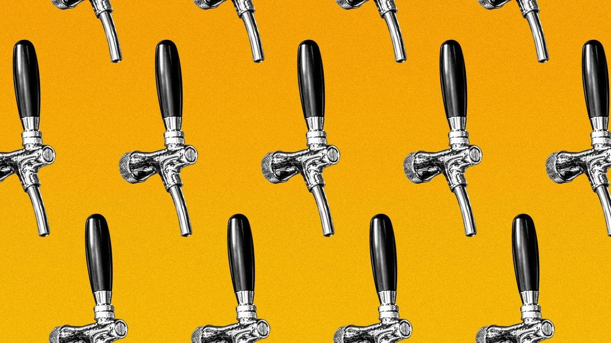

Where to celebrate Oktoberfest in San Antonio, the Hill CountryRaise a glass to Oktoberfest in San Antonio — the parties celebrating German culture are getting started. Flashback: The festival is traced to the Oct. 12, 1810, wedding of Bavarian Crown Prince Ludwig and Princess Therese of Saxe-Hildburghausen. - It's grown into an international celebration and a seemingly never-ending flow of beer. Fredericksburg is known for having a three-day blowout Oktoberfest celebration in October with multiple stages for live music, food, drinks and shopping. - But if you're eager to get started, keep reading. Künstler Brewing will have beer, music and games tomorrow and on Sunday. Little Woodrow's locations are also celebrating with Oktoberfest beers, brats, pretzels and a stein-holding competition. What's next: The fun continues after this weekend. Six Flags Fiesta Texas is hosting an Oktoberfest Food Festival every weekend until Oct. 29. Ranger Creek Brewing & Distilling will have a family-friendly event on Sept. 30 with a special food menu. Pre-sale tickets are available online. Beethoven Maennerchor will host a traditional Oktoberfest with beer, food and a choir that's a 156-year-old tradition during the first and second weekends of October. More San Antonio stories No stories could be found |
 |